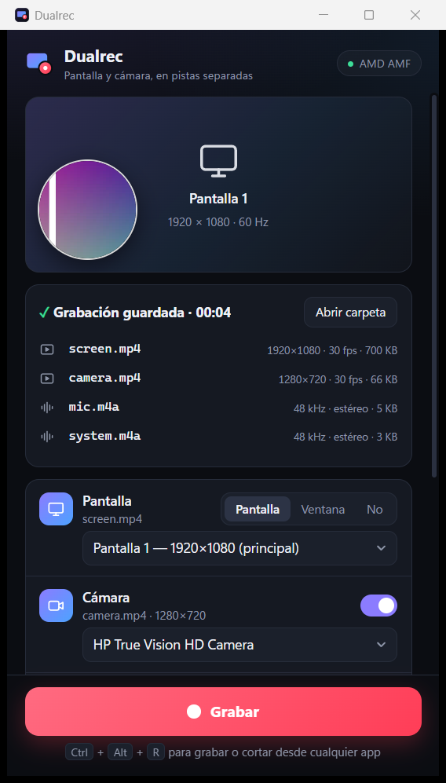

Grabá tu pantalla y tu cámara por separado.
Dualrec graba pantalla, cámara, micrófono y audio del sistema en cuatro archivos sincronizados. Editás cada uno como quieras, sin la cámara pegada encima del video.
Instalador de 30 MB · sin cuenta ni registro · las grabaciones quedan en tu computadora

Una grabación, cuatro archivos
Cada fuente se guarda en su propio archivo, en una carpeta por grabación. Todos arrancan en el mismo instante y duran lo mismo: en el editor los ponés al inicio de la línea de tiempo y ya están alineados.
screen.mp4
Una pantalla entera o una sola ventana, hasta 60 cuadros por segundo.
camera.mp4
Tu cámara a resolución completa, para ubicarla y recortarla donde quieras.
mic.m4a
Tu voz sola, para limpiarla o subirle el volumen sin tocar el resto.
system.m4a
Lo que suena en la computadora, separado del micrófono.
Hecho para grabar sin pensar en la grabación
Burbuja de cámara flotante
Te ves mientras grabás, la movés a donde no moleste y cambia de tamaño con doble clic.
La app no sale en el video
Dualrec y la burbuja quedan fuera de la grabación de pantalla. Se puede desactivar.
Atajos desde cualquier programa
Ctrl + Alt + R graba o corta y Ctrl + Alt + P pausa, sin volver a la ventana de Dualrec.
Pausa que no desincroniza
Al pausar, las cuatro pistas saltan el mismo tramo. Siguen alineadas al reanudar.
Usa tu placa de video
Codifica en H.264 por hardware con NVIDIA, Intel o AMD, y por procesador si no hay.
Si se cierra, no perdés lo grabado
Cada pista se escribe en disco desde el primer segundo y se puede reproducir aunque la app se cierre a la mitad.
Cómo se usa
- Elegí qué grabarPantalla o ventana, cámara, micrófono y audio del sistema. Cada uno se prende o se apaga por separado.
- Apretá GrabarO usá el atajo. Podés pausar las veces que quieras.
- Cortá y abrí la carpetaLos archivos quedan en
Videos\Dualrec, una carpeta por grabación, listos para tu editor.

Lo que viene
Dualrec empieza como grabador. El plan es que cada video se pueda compartir y consultar.
Link para compartir
La grabación se sube mientras grabás y al cortar tenés un link con reproductor web, con la cámara en una burbuja que se puede ocultar.
Transcripción y resumen
Cada video con su texto, un resumen y capítulos generados automáticamente.
Preguntale a tus videos
Buscá en lenguaje natural y saltá al minuto exacto donde lo explicaste.
Preguntas frecuentes
¿Cómo grabo la pantalla y la cámara por separado?
Abrí Dualrec, elegí la pantalla o ventana y la cámara, y apretá Grabar. Al cortar quedan dos videos distintos, screen.mp4 y camera.mp4, además del audio del micrófono y del sistema en archivos aparte.
¿Dualrec es gratis?
Sí. Grabar en tu computadora es gratis, sin registro y sin marca de agua.
¿Las pistas quedan sincronizadas?
Sí. Todas las pistas comparten el mismo reloj: arrancan en el mismo instante y duran lo mismo, así que en el editor se alinean poniéndolas al inicio de la línea de tiempo.
¿En qué se diferencia de otros grabadores de pantalla?
La mayoría entrega un solo video con la cámara ya pegada encima de la pantalla. Dualrec entrega cada fuente en su archivo, para que decidas en la edición dónde va la cámara, cuándo se ve y cómo suena cada audio.
¿Funciona en Mac?
Por ahora Dualrec funciona en Windows 10 y 11. La versión para macOS está planeada.
¿Necesito internet para grabar?
No. Dualrec graba sin conexión y los archivos quedan en tu computadora.
¿Con qué programas puedo editar las grabaciones?
Con cualquier editor de video. Los videos son MP4 con H.264 y los audios M4A con AAC, formatos que abren DaVinci Resolve, Premiere, CapCut y el resto de los editores habituales.
Probalo ahora
Gratis, sin registro. Para Windows 10 y 11.
Windows puede avisar que el instalador no está firmado: elegí “Más información” y después “Ejecutar de todas formas”.